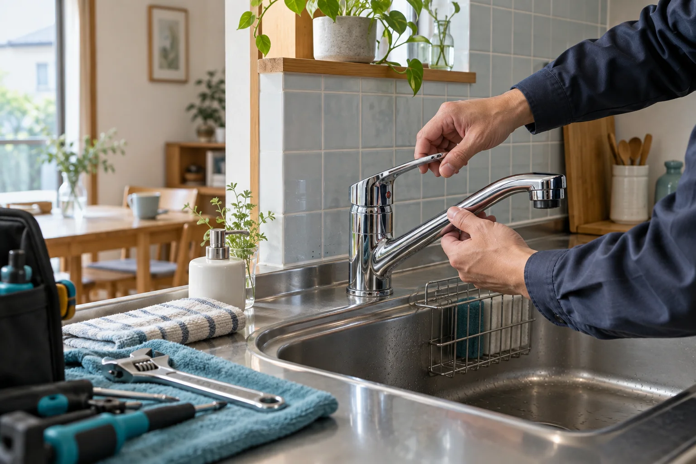

キッチン洗面所お風呂トイレ
01 / お困りごと
その「いつもと違う」を、
教えてください。
02 / 料金の考え方・構成案
作業の前に、
内容と費用を
わかる言葉で。
症状だけで金額を断定せず、必要な作業と費用の内訳を確認してから判断できる案内を想定しています。
お見積りで確認すること
- 作業内容
- どこを、どのように直すか
- 費用の内訳
- 作業費・部品代・その他の費用
- 追加費用
- 発生する条件と、事前の確認方法
- 対応日時
- 訪問可能な日程と作業の目安
本デモでは金額を設定していません。出張・見積り・キャンセル料、対応時間や地域などの正式条件は、運営事業者への確認後に掲載します。
03 / 相談の流れ・仮案内
状況を伝えて、
納得してから次の一歩へ。
- 01
場所と症状を整理
困っている箇所や、いつから起きているかを確認します。
- 02
対応内容を確認
対応可否・日程・見積り条件について案内を受けます。
- 03
内容を見て判断
作業と費用の説明を確認し、依頼するかを決めます。
運営の実態を示すものではなく、正式条件の確認を前提としたページ構成案です。
04 / 相談の準備
今のお困りごとを、
整理してみましょう。
個人情報の入力は不要です。
選択内容はこの画面だけで扱い、保存・送信しません。
05 / よくあるご質問
気になることを、ひとつずつ。
この画面から修理を依頼できますか？
できません。架空サービスの提案モックです。電話、LINE、メール、予約、決済は接続していません。
料金や対応地域は決まっていますか？
本デモでは未設定です。本制作では実際の料金体系、対応地域、営業時間、出張費・キャンセル料などを確認し、誤解のない案内に整えます。
写真は実際のスタッフですか？
AI生成による架空のイメージです。本制作では、掲載許可のある支給写真に差し替える想定です。